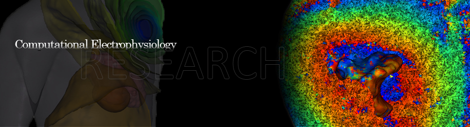

- Ph.D. Bioengineering, University of Utah, 2018
- B.S. Bioengineering, University of Utah, 2009
- Honors Diploma, Highland High School 2003
- Languages & Software: Matlab, Python, C++, Bash scripting, SCIRun, Seg3D, Cleaver, CARP, LabVIEW.
- Image Based Modeling: image processing, mesh generation, geometry registration, FE modeling, BE modeling, inverse problems, uncertainty quantification.
- Model Validation: clinical studies, large animal experiments, signal processing, data acquisition, image acquisition.
- Technical Manager, CIBC, University of Utah, 2017-present.
- - Manage research and software development projects for the CIBC.
- Manage software developer personnel.
-
- Manage technical resources and assist with budgeting.
- Research Associate, University of Utah, 2018-present.
- - Mentor graduate and undergraduate students in research projects.
- Perform research, publish scientific papers, and present at scientific conferences.
- - Develop software tools for research projects and contribute to long term software projects
- Research Assistance, University of Utah, 2009-2018.
- - Perform validation studies for defibrillation and cardiac source models using clinical data and animal preparations.
- - Publish scientific papers, and present at scientific
conferences.
- - Test and help develop software for the CIBC.
- - Mentor undergraduate students with senior research projects.
- Teaching Assistance, University of Utah, 2012.
- - Setup, run, and grade labs for the course.
- - Guest lecture.
- Undergraduate Researcher, University of Utah, 2008-2009.
- - Develop a mapping system for recording defibrillation shocks.
- Student Research, University of Utah, 2007-2009.
- - Develop and present teaching modules to encourage high school
students to pursue engineering.
- Finish Carpenter, Star Display, 2006-2008.
- - Built shop displays, trade show booths, and cabinets.
- Tutor for High School Students, 2003-2007.
- - Subjects: math, chemistry, and physics.
- Guest Lecturer for Intro to Image Based Modeling Course, 2015-present.
- TA and Organizer for Image-Based Biomedical Modeling summer course, 2013-2018.
- TA and Guest Lecturer, Systems Physiology, 2012.
- Guest Lecturer for Optimization Course, 2012.
- Project mentor for undergraduate students, 2009-present.
- Local HOA Chairperson, 2011-2014
- Local leader for the Boy Scouts of America, 2009-2013.
- Officer in Tau Beta Pi, 2008-2009.
- Students of Biomedical Engineering (SBME), faculty relations committee, 2008-2009.
- Recreation therapy volunteer for Shriners Hospital for Children, 2008-2009.
- Singapore Travel Grant for the 2019 Computing in Cardiology Conference, 2019.
- NSF GRF Honorable Mention, 2010,2011.
- Best Poster Award, Computing in Cariology, 2010.
- Tau Beta Pi, 2008-2009.
- Dean`s List, 2003, 2004, 2007-2009.
- Honors at Entrance Scholarship, 2003.
- Eagle Scout, 2003.